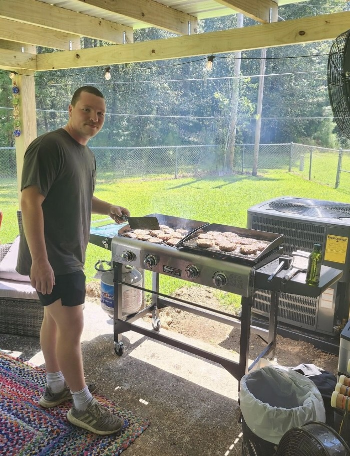

Roy Whitenton's Digital Resume
Job Skills
General residential electrical/mechanical experience
TIG, MIG, Flux Core welding
Extensive automotive/motorcycle overhauling
Microsoft Office, SAP, and various other computer software Expirence
Work Experience
Reliability Engineer COOP, Cooper Tire and Rubber Company – Tupelo, MS (May 2022 – August 2023)
Identified trends and opportunities to increase reliability of machines and departments
Managed mechanical and electrical maintenance
Built professional relationships with vendors and contractors
General Contractor, Whitenton Properties - Tupelo, Ms. (October 2019 – May 2022)
Assisted in new construction, residential rebuild, and general maintenance projects
Performed mechanical, electrical, and plumbing services
Operated heavy equipment
Insurance Agent, Aflac Insurance – Tupelo, Ms. (April 2020 – August 2020)
Gained medical insurance licensing in Mississippi
Promoted and sold a range of medical insurance product
Received Fast Start award for top sales in district within first five weeks of employment
